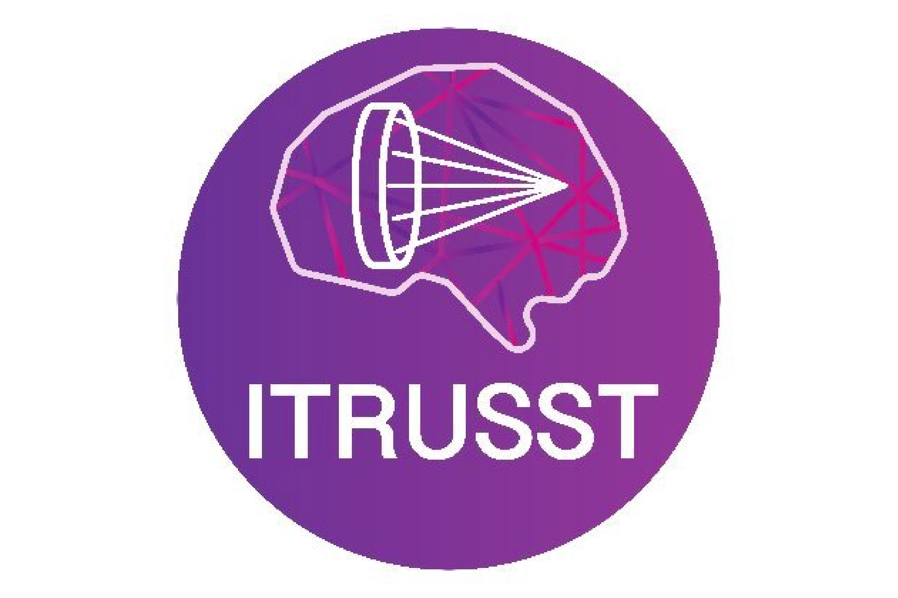

Bradley TreebyCo-chair PlanningResearch University College London UK |
Kim Butts PaulyCo-chair Planning,Reporting, Safety, & Practice Research Stanford University USA |
Aki PulkkinenhoiPlanningResearch University of Eastern Finland Finland |
Andrew ThomasPlanning, Safety,Equipment, & Practice Industry Brainbox Ltd UK |
Antonio StanziolaPlanningResearch University College London UK |
Axel ThielscherPlanningResearch Technical University of Denmark, Danish Research Centre for Magnetic Resonance Denmark |
Carlos CuetoPlanningResearch Imperial College London UK |
Christian BoehmPlanningResearch ETH Zurich Switzerland |
Douglas ChristensenPlanningResearch The University of Utah USA |
Elwin van ‘t WoutPlanningResearch Pontificia Universidad Católica de Chile Chile |
Esra NeufeldPlanningResearch IT’IS Foundation Switzerland |
Gianmarco PintonPlanningResearch University of North Carolina at Chapel Hill USA |
Hazael MontanaroPlanningResearch IT’IS Foundation Switzerland |
Jean-Francois AubryCo-chair Safety,Planning, & Reporting Research National Centre for Scientific Research France |
Jing YunPlanningResearch Penn State University USA |
Jiri JarosPlanningResearch Brno University of Technology Czech Republic |
Kullervo HynynenPlanningResearch Sunnybrook Research Institute Canada |
Lennart VerhagenChair Reporting, Planning,Safety, & Practice Research Donders Insitute, Radboud University Nijmegen NL |
Lluis GuaschPlanningResearch Imperial College London UK |
Nathan McDannoldPlanningResearch Brigham & Women’s Hospital, Harvard Medical School USA |
Ningrui LiPlanningResearch Stanford University USA | Oscar BatesPlanningResearch Imperial College London UK |
Patrick MartyPlanningResearch ETH Zurich Switzerland |
Pierre GelatPlanningResearch University College London UK |
Samuel PichardoPlanningResearch University of Calgary Canada |
Siti YaakubPlanningResearch University of Plymouth UK |
Lennart VerhagenChair Reporting, Planning,Safety, & Practice Research Donders Insitute, Radboud University Nijmegen NL |
Gail ter HaarReportingResearch Institue of Cancer Research UK |
Jean-Francois AubryCo-chair Safety,Planning, & Reporting Research National Centre for Scientific Research France |
Kim Butts PaulyCo-chair Planning,Reporting, Safety, & Practice Research Stanford University USA |
Mark SchaferReporting, Safety, EquipmentResearch & Industry Drexel University, Brainsonix USA | Robin ClevelandReportingResearch University of Oxford UK |
Jean-Francois AubryCo-chair Safety,Planning, & Reporting Research National Centre for Scientific Research France |
Seung-Schik YooCo-chair SafetyResearch Harvard University USA |
Andrew ThomasPlanning, Safety,Equipment, & Practice Industry Brainbox Ltd UK |
Anton FomenkoSafety & PracticeResearch University of Toronto Canada |
Charles CaskeySafety & Observer PracticeResearch Vanderbilt University, Institute of Imaging Science USA |
Charlotte StaggSafetyResearch University of Oxford UK |
David AttaliSafetyResearch ESPCI France |
Ellen BubrickSafety & ClinicalResearch Brigham & Women’s Hospital USA |
Elsa FouragnanSafety & EquipmentResearch University of Plymouth UK |
Fidel Vila-RodriguezSafety & ClinicalResearch University of British Colombia Canada |
Ghazal DarmaniSafetyResearch University of Toronto Canada |
Jerome SalletSafetyResearch University of Oxford INSERM UK |
Kim Butts PaulyCo-chair Planning,Reporting, Safety, & Practice Research Stanford University USA |
Lennart VerhagenChair Reporting, Planning,Safety, & Practice Research Donders Insitute, Radboud University Nijmegen NL |
Mark SchaferReporting, Safety, EquipmentResearch & Industry Drexel University, Brainsonix USA |
Miriam Klein-FlüggeSafetyResearch University of Oxford UK |
Robert ChenSafetyResearch University Health Network Canada |
Elly MartinChair EquipmentResearch University College London UK |
Andrew ThomasPlanning, Safety,Equipment, & Practice Industry Brainbox Ltd UK |
Elsa FouragnanEquipment & SafetyResearch University of Plymouth UK |
Kyle MorrisonEquipmentIndustry Sonic Concepts USA |
Mark SchaferReporting, Safety, EquipmentResearch & Industry Drexel University, Brainsonix USA |
Til Ole BergmannChair PracticeResearch Johannes Gutenberg University Medical Center Mainz Germany |
Andrew ThomasPlanning, Safety,Equipment, & Practice Industry Brainbox Ltd UK |
Anton FomenkoSafety & PracticeResearch University of Toronto Canada |
Apoutou N’DjinPracticeResearch Inserm, LabTAU Lyon France |
Benjamin KopCo-chair Open & PracticeResearch Donders Institute Radboud University Nijmegen NL |
Charles CaskeySafety, Observer PracticeResearch Vanderbilt University, Institute of Imaging Science USA |
Hartwig SiebnerClinical & PracticeResearch Danish Research Centre for Magnetic Resonance Denmark |
Keith MurphyPracticeResearch Stanford University USA |
Kim Butts PaulyCo-chair Planning,Reporting, Safety, & Practice Research Stanford University USA |
Lennart VerhagenChair Reporting, Planning,Safety, & Practice Research Donders Insitute, Radboud University Nijmegen NL |
Sven BestmannPracticeResearch University College London UK |
Takahiro OsadaPracticeResearch Juntendo University Tokyo Japan |
Tulika NandiCo-chair Open & PracticeResearch Johannes Gutenberg University Medical Center Mainz Germany |
Yoshikazu UgawaPracticeResearch Fukushima Medical University Japan |
Benjamin KopCo-chair Open & PracticeResearch Donders Institute Radboud University Nijmegen NL |
Tulika NandiCo-chair Open & PracticeResearch Johannes Gutenberg University Medical Center Mainz Germany |
Colette ReniersOpen & AdminResearch Donders Institute Radboud University Nijmegen NL |
Jesse van der SpekOpen & AdminResearch Donders Institute Radboud University Nijmegen NL |
Solenn WalstraOpen & AdminResearch Donders Institute Radboud University Nijmegen NL |
Christopher ButlerChair Clinical & SafetyResearch University of Oxford, Imperial College London UK |
Alexander BystritskyClinicalIndustry BrainSonix USA |
Ellen BubrickSafety & ClinicalResearch Brigham & Women’s Hospital USA |
Fidel Vila-RodriguezSafety & ClinicalResearch University of British Colombia Canada |
Hartwig SiebnerClinical & PracticeResearch Danish Research Centre for Magnetic Resonance Denmark |
Jamie TylerClinicalResearch Arizona State University, IST USA |
Martin MontiClinicalResearch University of California Los Angeles USA |
Andres LozanoObserverResearch University of Toronto Canada |
Anna KuppuswamyObserverResearch University College London UK |
Bruno QuessonObserverResearch National Centre for Scientific Research France |
Camila AgostinoObserverResearch Otto von Guerick University Magdeburg Germany |
Carl HerickhoffObserverResearch The University of Memphis USA |
Charles CaskeyObserverResearch Neurorestore (University Hospital Lausanne /Swiss Federal Institute of Technology Switzerland |
Charles-Francois LatchoumaneSafety & Observer PracticeResearch Vanderbilt University, Institute of Imaging Science USA |
Christian AurupObserverResearch Columbia University USA |
Cristina PasquinelliObserverResearch Danish Research Centre for Magnetic Resonance Denmark |
David McMullenObserverResearch National Institute of Mental Health USA |
Davide SabedduObserverResearch Donders Institute, Radboud University Nijmegen NL |
Debby KloosterObserverResearch Ghent University Belgium |
Dennis ParkerObserverResearch The University of Utah USA |
Elisa KonofagouObserverResearch Columbia University USA |
Erik DumontObserverIndustry Image Guided Therapy France |
Estelle RaffinObserverResearch Swiss Federal Institute of Technology Switzerland |
Ethan BendauObserverResearch Columbia University USA |
Evelien CarretteObserverResearch Ghent University Hospital Belgium |
Frederic PadillaObserverResearch Focused Ultrasound Foundation USA |
Harriet Lea-BanksObserverResearch Sunnybrook Research Institute Canada |
Hermes KamimuraObserverResearch Columbia University USA |
Izzy KohlerObserverIndustry Neurgear USA |
Jeff KellerObserverIndustry Electronics, Innovation, Ltd. USA |
Joel SegreObserverResearch X Company USA |
John SnellObserverResearch Focused Ultrasound Foundation USA |
John RothwellObserverResearch University College London UK |
Jonathan HackerObserverResearch Rochester Institute of Technology USA |
José Pineda-PardoObserverResearch hmCINAC Spain |
Josh CainObserverResearch University of California USA |
Julian KosciessaObserverResearch Donders Institute, Radboud University Nijmegen NL |
Marc FournelleObserverResearch The Fraunhofer Institute Germany |
Marcus KaiserObserverResearch University of Nottingham UK |
Markus UlsbergObserverResearch Otto-von-Guericke University Magdeburg Germany |
Mary LeeObserverResearch National Institutes of Health USA |
Mathieu SprengersObserverResearch Ghent University Belgium |
Mikhail ShapiroObserverResearch Caltech University USA |
Noah PhilipObserverResearch Brown University USA |
Norman SpivakObserverResearch University of California Los Angeles USA |
Olivier Le BaronObserverIndustry Imasonic France |
Philip SabesObserverIndustry Neuralink USA |
Peter MurphyObserverResearch Trinity College Dublin Ireland |
Pierre PougetObserverResearch National Centre for Scientific Research France |
Rob MestromObserverResearch Eindhoven University of Technology NL |
Roland BeisteinerObserverResearch Medical University of Vienna Austria |
Ryan JonesObserverResearch Sunnybrook Research Institute Canada |
Seiki KonishiObserverResearch Juntendo University Japan |
Shrek ChalasaniObserverResearch Salk Institute for Biological Studies USA |
Sjoerd MeijerObserverResearch Donders Institute, Radboud University Nijmegen NL |
Steffen TretbarObserverResearch Fraunhofer Institute for Biomedical Engineering Germany |
Susie LeBlangObserverResearch Focused Ultrasound Foundation USA |
Tara KugelmanObserverResearch Columbia University USA |
Thomas RheineckObserverIndustry MR Instruments USA |
Viola RiekeObserverResearch University of Utah USA |
Vlad MiskovicObserverIndustry X Company USA |
Walter PaulusObserverResearch University of Göttingen Germany |
Wynn LegonObserverIndustry University of Virginia USA |
Xinghao ChengObserverResearch University of Oxford UK |
Yasuo TeraoObserverResearch Kyorin University Japan |
Yeruham ShapiraObserverIndustry Insightec Israel |
Ying-Zu HuangObserverResearch Chang Gung University Taiwan |
Zhihai QiuObserverResearch Stanford University USA |